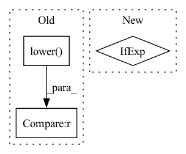

Pattern ID :7821

Before Change
**kwargs,
):
try:
if compression.lower() not in GRPC_COMPRESSION_MAP:
import warnings
warnings.warn(
After Change
):
try:
self.compression = (
getattr(grpc.Compression, compression)
if compression
else grpc.Compression.NoCompression
)
self.inputs = inputs
In pattern: SUPERPATTERN
Frequency: 3
Non-data size: 3
Instances
Fragment ID: 27922262
Project Name: jina-ai/jina
Commit Name: 1b05b842d7a2c851b5de2150591198ad0d9987dc
Time: 2022-06-06
Author: han.xiao@jina.ai
File Name: jina/clients/base/grpc.py
M Class Name: GRPCBaseClient
N Class Name: GRPCBaseClient
M Method Name: _get_results(6)
N Method Name: _get_results(6)
M Parent Class: BaseClient
N Parent Class: BaseClient
M File Name: jina/clients/base/grpc.py
N File Name: jina/clients/base/grpc.py
M Start Line: 40
M End Line: 53
N Start Line: 34
N End Line: 42
'>
Before Change
"Gzip".lower(): grpc.Compression.Gzip,
"Deflate".lower(): grpc.Compression.Deflate,
}
if compression.lower() not in GRPC_COMPRESSION_MAP:
import warnings
warnings.warn(
After Change
self._logger = logger or JinaLogger(self.__class__.__name__)
self.compression = (
getattr(grpc.Compression, compression)
if compression
else grpc.Compression.NoCompression
)
if metrics_registry:
'>
Fragment ID: 27922263
Project Name: jina-ai/jina
Commit Name: 1b05b842d7a2c851b5de2150591198ad0d9987dc
Time: 2022-06-06
Author: han.xiao@jina.ai
File Name: jina/serve/networking.py
M Class Name: GrpcConnectionPool
N Class Name: GrpcConnectionPool
M Method Name: __init__(4)
N Method Name: __init__(4)
M Parent Class:
N Parent Class:
M File Name: jina/serve/networking.py
N File Name: jina/serve/networking.py
M Start Line: 440
M End Line: 459
N Start Line: 440
N End Line: 449
'>
Before Change
if args.use_anchor_free_mode:
args.anchor_scale = 1
if args.anchor_pyramid_levels_max <= 0:
header_type = "yolox" if "yolox" in args.model_path.lower() else "efficientdet"
HEADER_DEFAULT = {"yolox": 5, "yolor": 5, "efficientdet": 7}
args.anchor_pyramid_levels_max = HEADER_DEFAULT.get(header_type, args.anchor_pyramid_levels_max)
args.anchor_pyramid_levels = [args.anchor_pyramid_levels_min, args.anchor_pyramid_levels_max]
After Change
args = parser.parse_known_args(argv)[0]
args.additional_anchor_kwargs = json.loads(args.additional_anchor_kwargs) if args.additional_anchor_kwargs else {}
if args.use_anchor_free_mode:
args.anchor_scale = 1
return args
'>
Fragment ID: 27922261
Project Name: leondgarse/keras_cv_attention_models
Commit Name: 395e20dae33afc89bda7ea68badf798e3168aeb9
Time: 2022-03-24
Author: leondgarse@gmail.com
File Name: eval_script.py
M Class Name: AnonimousClass
N Class Name: AnonimousClass
M Method Name: parse_arguments(1)
N Method Name: parse_arguments(1)
M Parent Class:
N Parent Class:
M File Name: eval_script.py
N File Name: eval_script.py
M Start Line: 33
M End Line: 51
N Start Line: 39
N End Line: 48